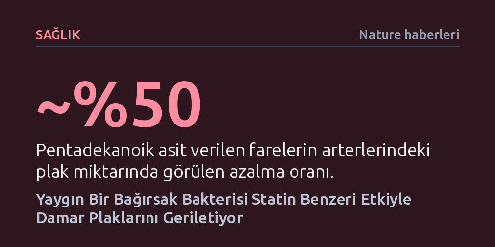

SAGLIK · Nature haberleri · 2026-10-08
İnsan bağırsağında yaygın bulunan Bacteroides uniformis bakterisinin ürettiği pentadekanoik asit, kolesterol üretimini baskılayarak damar sertliği plaklarını farelerde yarıya kadar geriletti. Statinlerle aynı biyolojik mekanizmayı kullanan bileşik, kalp-damar hastalıklarında mikrobiyom odaklı yeni bir tedavi alternatifi sunuyor.
Bağırsak mikrobiyomunun kalp sağlığıyla yalnızca dolaylı bir ilişki içinde olmadığını, doğrudan statin benzeri mekanizmalarla damar tıkanıklığını geriletebileceğini kanıtlıyor.

Damar sertliği (ateroskleroz), arter çeperlerinde biriken iltihaplı plaklar nedeniyle dünya genelinde bir numaralı ölüm nedeni olmayı sürdürüyor. Günümüzde yüz milyonlarca insan, kolesterolü dizginlemek ve kalp krizi riskini azaltmak amacıyla her gün statin grubu ilaçlar kullanıyor.
Ancak mevcut tedavi protokolleri herkes için kesin çözüm üretmiyor. İlerlemiş kalp hastalığı bulunan bireylerin neredeyse yarısında statinler kolesterolü hedeflenen seviyelere düşürmeye yetmiyor; kimi hastalar ise ilacın yüksek dozlarına karşı ciddi yan etkiler geliştirerek tedaviyi tolere edemiyor. Bu klinik tablo, kardiyovasküler koruma için karaciğer ve dolaşım sistemi dışındaki alternatif mekanizmalara odaklanmayı zorunlu kılıyor.
Çin'deki Sun Yat-sen Üniversitesi'nden mikrobiyolog Wenjing Zhao ve ekibi, çözümün bağırsak florasında gizlenmiş olabileceği varsayımıyla yola çıktı. Kalp-damar hastalığı olan ve olmayan bireylerin dışkı örnekleri incelendiğinde belirgin bir ayrım dikkat çekti: Sağlıklı bireylerde bolca bulunan Bacteroides uniformis adlı bakteri, kalp hastalarında ciddi biçimde tükenmiş durumdaydı.
Araştırmacılar bu bulguyu doğrulamak için genetik olarak damar sertliğine yatkın hale getirilen ve yüksek yağlı diyetle beslenen fareler üzerinde deneyler gerçekleştirdi. Canlı Bacteroides uniformis takviyesi alan kemirgenlerin ana atardamarlarındaki plak oluşumu, tedavi edilmeyen gruba kıyasla yaklaşık üçte bir oranında küçüldü. Bakteriyel doz, yalnızca plak hacmini daraltmakla kalmadı; kandaki kötü huylu kolesterol (LDL) düzeylerini ve damar duvarına sızan iltihaplı bağışıklık hücrelerinin miktarını da belirgin biçimde aşağı çekti.
Bakterinin sağladığı korumanın ardındaki kimyasal sırrı araştıran ekip, sürecin başrolünde pentadekanoik asit adlı molekülün yer aldığını belirledi. Bu bileşik doğrudan farelere verildiğinde, damarlardaki plak yükünü tek başına yaklaşık yarı yarıya hafifletmeyi başardı.
İleri analizler, molekülün etki mekanizmasının şaşırtıcı şekilde statin ilaçlarıyla örtüştüğünü gösterdi. Pentadekanoik asit, karaciğerde kolesterol üretiminden sorumlu temel enzimi baskılıyor. Bu enzimin kilitlenmesi üzerine karaciğer, kanda serbest dolaşan fazla kolesterolü temizlemek için çok daha fazla sayıda LDL reseptörü üretmeye başlıyor ve zararlı yağlar dolaşımdan hızla çekiliyor. Avustralya'daki Monash Victoria Kalp Enstitüsü'nden kardiyovasküler uzman Ben Chen, bu çalışmanın bağırsak ile damar sağlığı arasındaki ilişkiyi basit bir korelasyondan çıkarıp "potansiyel olarak nedensel bir biyolojik mekanizma kanıtı" haline getirdiğini vurguluyor.
Hayvan modellerinde elde edilen bu çarpıcı tablonun insan fizyolojisine nasıl yansıdığını anlamak amacıyla 200'den fazla donörün kan ve dışkı örnekleri tarandı. Sonuçlar laboratuvar verileriyle birebir örtüştü: Kanında yüksek kolesterol saptanan bireylerin pentadekanoik asit seviyeleri sağlıklı kişilere göre bariz şekilde düşüktü. Ayrıca kalp hastalarının dışkılarında, bu molekülü sentezleyen bakteriyel genlerin sayısının da çok daha az olduğu görüldü.
Bu bulgular, gelecekte kalp hastalıklarının önlenmesinde ve tedavisinde yalnızca sentetik ilaçlara bağımlı kalınmayabileceğini gösteriyor. Standart statin tedavilerine yanıt vermeyen veya ilacı tolere edemeyen hastalar için Bacteroides uniformis içeren probiyotik destekler veya doğrudan saflaştırılmış pentadekanoik asit tedavileri, kardiyovasküler tıpta yepyeni bir sayfa açabilir.